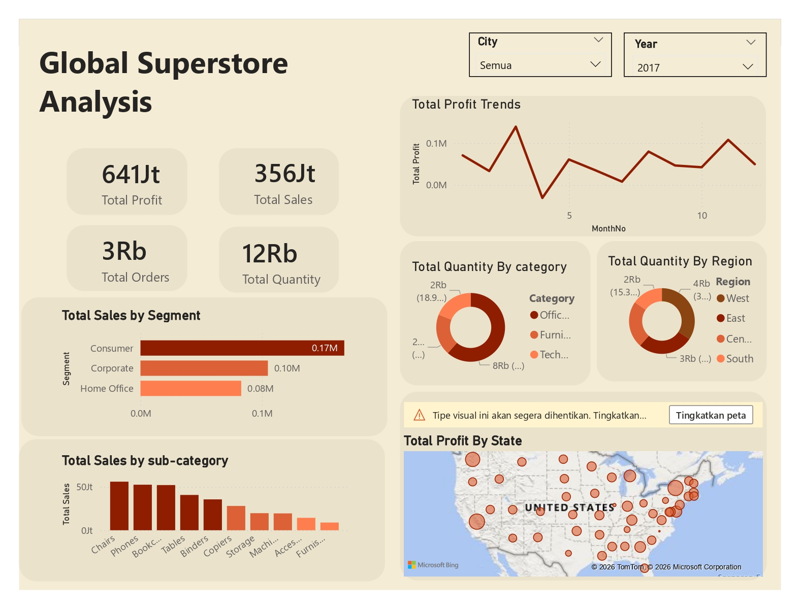

Global Superstore Dashboard
A business intelligence and data visualization project analyzing global sales trends, profitability, and customer behavior.

📌 Project Overview
The Global Superstore project focuses on analyzing sales performance data to generate actionable business insights. The analysis evaluates sales, profit, product categories, customer segments, and regional performance to support strategic decision-making.
This project applies Exploratory Data Analysis (EDA), data visualization, and business performance analysis to identify trends, high-performing categories, and areas with low profitability.
🎯 Project Objectives
- Evaluate sales and profit performance to identify growth trends, performance gaps, and opportunities for profitability improvement.
- Identify high-performing products and customer segments to support product prioritization and revenue optimization.
- Analyze regional and geographic performance to identify high-potential markets and underperforming areas requiring targeted strategies.
- Uncover temporal sales and profit patterns to support more effective promotional, inventory, and operational planning.
- Translate business data into actionable insights to support data-driven strategies for improving sales performance, profitability, and market coverage.
📊 Analysis Performed
- Sales and profit trend analysis.
- Product category and sub-category analysis.
- Regional and market performance analysis.
- Customer segment analysis.
- Shipping and operational performance analysis.
- Identification of low-profit products and regions.
🛠 Tools & Technologies
📈 Results & Business Impact
- Profit increased from 335K to 641K between 2014 and 2017, indicating strong long-term profitability growth.
- Sales quantity increased from 8K to 12K units, while annual orders remained relatively stable at around 2K.
- Consumer was the largest sales-contributing segment, highlighting opportunities for customer retention and segment growth.
- Chairs and Phones were the top-selling sub-categories, supporting product prioritization and revenue optimization.
- West was the highest-performing region by quantity, providing a benchmark for regional performance strategies.
- Monthly profit fluctuations revealed opportunities to improve promotional, inventory, and operational planning.
- Regional profit gaps highlighted underperforming states that could be targeted for further market analysis and growth strategies.
Overall, the analysis transformed sales data into actionable business insights, supporting profitability improvement, product prioritization, and targeted regional growth.
View Project on GitHub